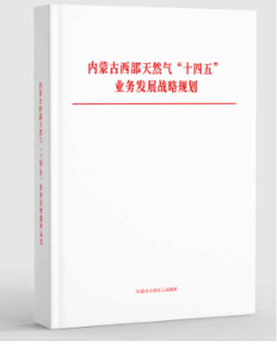
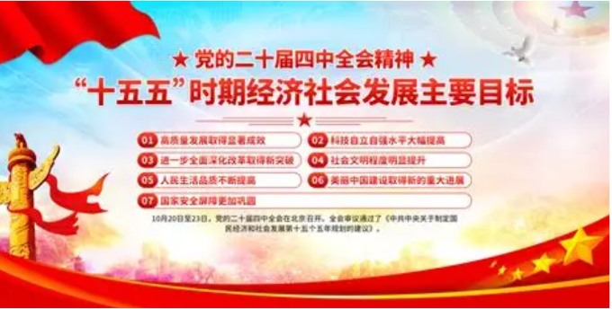

Energy Policy of China
China's energy policy operates under a top-down, state-driven model that tightly integrates environmental legislation with mid-to-long-term macroeconomic planning. The overarching strategy emphasizes energy security first, often described as "establishing the new system before breaking the old," while gradually shifting from controlling total energy consumption to controlling total carbon emissions.
China still relies heavily on thermal power, but its policy framework also pushes a large-scale transition from non-renewable energy toward renewable energy. Environmental policy and national energy strategy are closely linked: strict controls exist for many toxic pollutants, while the transition remains gradual because fossil-based generation is still central to national energy security.
Core Legislation
Environmental Protection Law (2014 Revision): The foundational law for China's environmental governance. It establishes environmental impact assessments, stronger penalties for pollution, and legal boundaries for industrial and energy infrastructure projects.
Energy Law: An umbrella statute for the energy sector that codifies the transition toward green energy, supports renewable energy integration, and links energy security with carbon-neutrality goals.
Renewable Energy Law and Energy Conservation Law: Supporting statutes that set renewable energy consumption duties for grid operators, provide financial subsidies, and establish national energy-efficiency standards.
Five-Year Plan System
14th Five-Year Plan (2021-2025): Set binding targets for non-fossil energy consumption, expanded large wind and solar bases in desert regions, and accelerated pumped-storage and battery-storage development.
15th Five-Year Plan (2026-2030): Marks a transition from energy "dual control" to carbon "dual control," moving policy attention from limiting energy volume and intensity toward limiting carbon emissions volume and intensity.
"1+N" Carbon Neutrality Framework: The national policy blueprint guiding ministerial action toward peak carbon emissions before 2030 and carbon neutrality before 2060.

